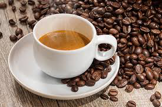
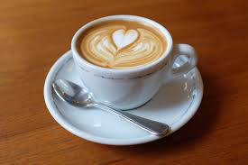
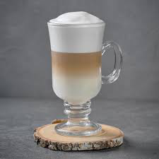
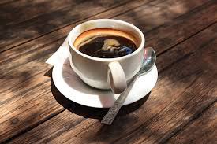
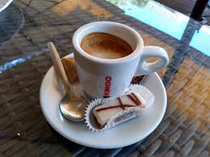

Добрдојдовте во светот на кафето
Кафето не е само пијалок тоа е момент на мир, инспирација и уживање.
На нашата страница ќе ја откриеме историјата на кафето,различните видови зрна,
методите на подготовка и тајните за совршена шолја кафе.
Зошто го сакаме кафето?
Го разбудува телото и умот
Има богат вкус и арома
Соединение на традиција, култура и уживање
Идеален ритуал за почеток на денот
Видови кафе
ЕСПРЕСО
-интезивен вкус и силна арома

КАПУЧИНО
-совршен баланс на млеко и кафе

ЛАТЕ
кремасто и благо

АМЕРИКАНО
-лесна и нежна арома

МАКИЈАТО
-елегантна комбинација
од еспресо и малку млеко

Нашата мисија
Да го споделиме задоволството и љубовта кон
кафето со сите љубители на овој волшебен напиток.
Без разлика дали сте почетник или вистински
познавач-тука сте на вистинското место.
Уживај во секоја голтка
Истражи, научи и инспирирај се.
Подготви си кафе, седни удобно и уживај.